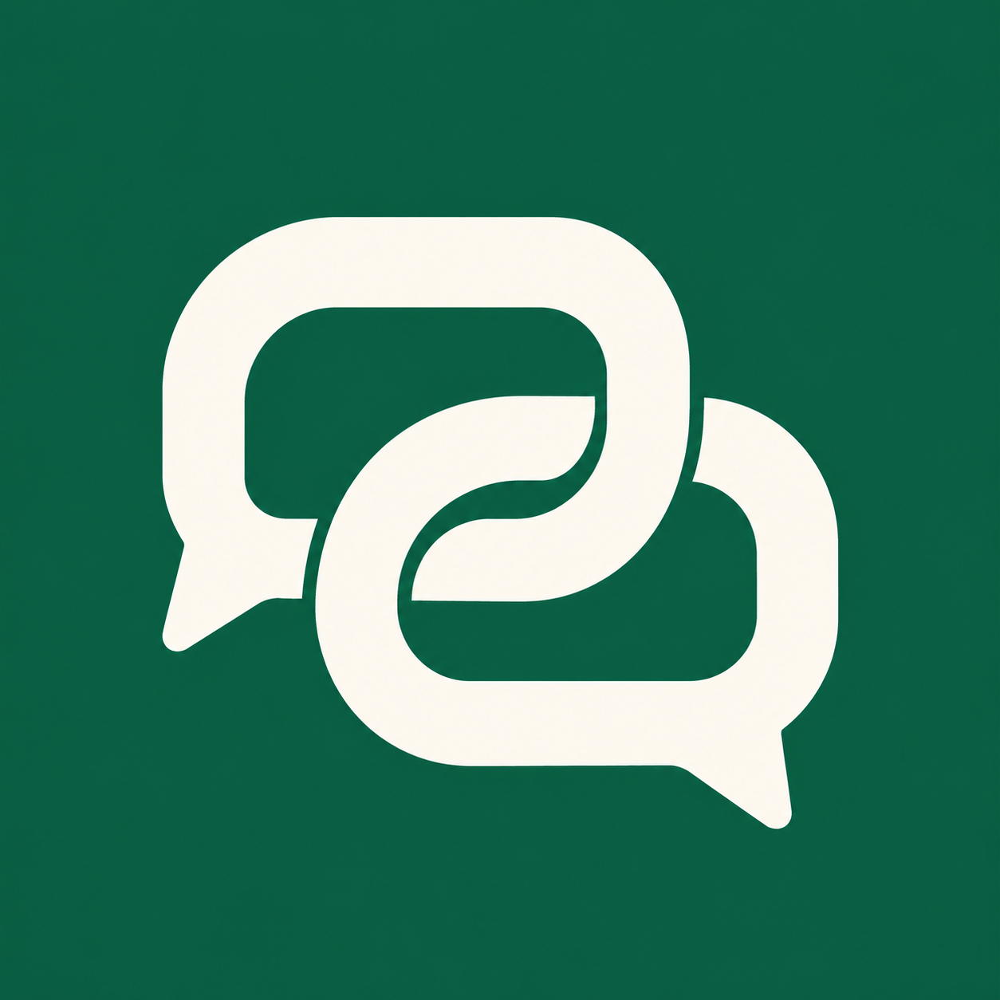

和你的管家一起处理工作。
进入
credentials.json
为下一条消息选择一个角色。各角色使用同一段聊天记录，操作权限不变。
请同事帮忙：从「联系人」选择同事，填写任务摘要。核对接收人、摘要和材料后，点击「确认共享并委派」。私聊内容不会发送。
审阅和交付：草稿仅你可见。检查并修改后，预览交付内容，再点击「确认交付」。最后由任务发起人验收。
发送后没有回复：先点击「核对发送状态」。系统不会自动重发。若要再发一次，选择「开始新尝试」，核对内容后再点发送。上次消息可能已经处理，再次发送可能重复。
点击输入框下方的「对话选项」可选择下一条消息的角色；在「个人角色设置」中管理角色，也可输入 /agents 打开设置。按 Ctrl / ⌘ + Shift + K 可打开或收起任务面板。
/agents
管理员启用只读仓库后，可输入 /repo 仓库ID 完整提交ID 文件路径，换行写问题；或 /repo-search 仓库ID 完整提交ID 关键词，换行写问题。仅限你的白名单仓库与固定提交，不执行代码。
/repo 仓库ID 完整提交ID 文件路径
/repo-search 仓库ID 完整提交ID 关键词
直接说你想解决的问题，无需先配置角色。选择角色是可选项，只影响下一条普通聊天。委派会先展示接收人和共享摘要，等你确认。Enter 发送，Shift+Enter 换行。